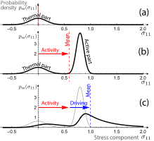
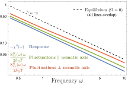

Put your hand on a table. It feels perfectly still. But zoom in a million times, into a living cell, and you'll find a world in constant, furious motion. Proteins jitter, vesicles bounce, entire organelles get shoved around by forces that have nothing to do with temperature. This isn't the gentle Brownian motion you learned about in school. This is active noise: the restless shaking of living matter, powered by the molecular engines that keep biology running.
For over a century, physicists have had an elegant formula, the fluctuation-dissipation theorem (FDT), that connects how much a system jiggles to how much it resists being pushed. It works beautifully for systems in thermal equilibrium: coffee cooling, pollen grains dancing in water, atoms in a crystal. But cells aren't in equilibrium. They burn fuel. They are molecular machines in constant operation. And the FDT simply doesn't apply.
So here's the question that has haunted biophysicists: Where exactly does active noise come from, and can we predict it from first principles?
In our new paper, we answered that question. We built a minimal model of an active gel (the kind of soft, squishy material that makes up much of the cell's interior) and traced its fluctuations all the way back to their molecular origin: the breaking of detailed balance in the binding and unbinding of molecular crosslinkers. The result is what we call a fluctuation-activity relation, a new theoretical framework that extends the FDT to active, living systems.
Think of the inside of a cell. The cytoskeleton, a dense meshwork of protein filaments like actin and microtubules, is held together by molecular crosslinkers and motors. These motors can actively bind and unbind, burning ATP fuel in the process. The result is a material that's somewhere between a liquid and a solid: it flows, it resists deformation, and it's constantly being remodeled from within.
We call this an active gel. It's the stuff of cell cortices, mitotic spindles, and even tissue-level structures where cells are crosslinked through adhesion molecules. And it's the playground where active noise is most relevant, and most mysterious.
In an equilibrium system, every molecular process is balanced by its reverse. A crosslinker that binds at a certain rate will unbind at a rate dictated by the same energy landscape. This is detailed balance, the microscopic expression of thermodynamic equilibrium.
But molecular motors aren't equilibrium objects. They consume ATP, and this chemical energy modifies their binding kinetics in a way that violates detailed balance. In our model, we capture this with a single function, $\Omega$, that quantifies exactly how much the binding rates deviate from what equilibrium thermodynamics would predict.
When $\Omega = 0$, the system obeys all the classical rules. When $\Omega \neq 0$, the system is alive, and its fluctuations carry a signature of that molecular-scale rule-breaking.
This might sound abstract, but the consequences are very concrete. The function $\Omega$ encodes the activity of molecular motors, and it directly determines the properties of the active noise: its amplitude, its anisotropy, and how it departs from equilibrium predictions.
The real technical achievement of our work is in the coarse-graining: taking the stochastic dynamics of millions of individual crosslinkers, each binding, unbinding, stretching, and reorienting, and distilling it into a set of fluctuating hydrodynamic equations for the gel's stress tensor.
The average behavior of the gel was already known: it behaves like a viscoelastic fluid with a Maxwell-type constitutive relation. What we did is go beyond the average. We derived the noise term that must accompany the constitutive relation, and we showed that it has a remarkably clean structure.
Thermal noise: The equilibrium fluctuations you'd expect from the FDT. Present even in a dead gel.
Driven noise: Extra fluctuations from external deformations (like shearing the gel). Second-order in the driving rate.
Active noise: The star of the show. Directly determined by $\Omega$, the function that quantifies the breaking of detailed balance.
Cross noise: A coupling term from the interplay of activity and driving. Exists only when both are present.
A crucial finding: the noise is white, meaning it's uncorrelated in time. This isn't an assumption we made; it's a result we derived, and it comes from the Markovian (memoryless) nature of the crosslinker dynamics. The white noise spectrum is a powerful simplification that makes the theory analytically tractable.
What does activity actually do to the fluctuations? Our theory gives a precise answer, and it's beautifully illustrated by looking at the probability distribution of the stress in the gel.

In equilibrium (panel a), the stress fluctuates symmetrically around zero, following a familiar Gaussian-like bell curve. Turn on activity (panel b), and the distribution shifts and becomes visibly asymmetric, acquiring a prominent active contribution that skews the stress towards positive values. Add external driving (panel c), and the distribution shifts further. Importantly, the combined effect of activity and driving is not simply the sum of the two; they interact in a fundamentally nonlinear way, producing cross-coupling terms in the noise amplitude.
How could experiments detect these active fluctuations? The answer lies in microrheology, a technique where you track a tiny probe particle embedded in the gel and watch it jiggle.
In passive microrheology, you simply observe the particle's Brownian-like motion and measure its fluctuation spectrum. In active microrheology, you push the particle with a known force and measure how it responds. In equilibrium, the FDT says these two measurements must agree. In an active system, they don't, and the gap between them is a direct fingerprint of molecular activity.

Our theory makes a striking prediction: in an active gel, the fluctuations of the tracer particle are not only enhanced compared to equilibrium, but also anisotropic. A particle embedded in an active nematic gel fluctuates more in the direction perpendicular to the filament alignment than along it. This is a direct, testable signature of the molecular-scale breaking of detailed balance.
The gap between fluctuations and response isn't just a violation of the FDT. It is a window into the molecular engines that power life.
Active fluctuations aren't just a curiosity; they have real biological consequences. They enhance the diffusion of vesicles and macromolecules inside cells. They may help position the cell nucleus. They could enable cells to sense weak magnetic fields. They drive bleb nucleation in the cell membrane. Understanding where these fluctuations come from, and how to predict them, is essential for understanding the physics of living systems.
Until now, the standard approach was to treat active noise phenomenologically: just add some noise with the right properties and fit it to data. Our work changes the game. By deriving the noise from an explicit microscopic model, we establish a direct link between molecular-scale activity (the breaking of detailed balance) and mesoscopic fluctuations (the noise in the stress tensor and the jiggling of probe particles).
This is what we call the fluctuation-activity relation, a natural generalization of the fluctuation-dissipation theorem to active systems. Where the FDT relates fluctuations to dissipation through temperature, our relation connects fluctuations to the degree of detailed-balance breaking through the activity function $\Omega$.
Our model is deliberately minimal, and that's a feature, not a bug. The simplicity lets us derive exact results and identify the essential physics. But it also means there's a clear roadmap for extensions: accounting for the complex power-law rheology of real cytoskeletal networks, including active forces that motors exert while bound, and considering crosslinker diffusion.
The theory could be applied to a wide range of biological systems: actomyosin networks, the mitotic spindle, the cell interior, DNA gels, and even cell-cell junctions in tissues. Anywhere that molecular motors or active crosslinkers drive a network out of equilibrium, our framework provides a principled way to predict the resulting fluctuations.
In a broader sense, this work contributes to one of the grand challenges of modern physics: extending the powerful framework of statistical mechanics, built for equilibrium, to the far-from-equilibrium world of living matter. The fluctuation-dissipation theorem was one of the triumphs of 20th-century physics. Our fluctuation-activity relation is a step toward a 21st-century counterpart for active systems.